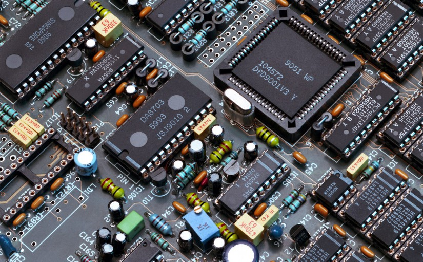

Unsustainable fishing is a leading cause of declines in marine life, which impacts entire ecosystems. When stocks decline, nature’s imbalance directly affects local jobs, businesses, and food sources. The ripple effect is global. Since unsustainable fishing is a problem entirely caused by human behavior, people have the power to fix it.  We are acting globally to identify the most practical tools for transforming fishing and working locally to match proven approaches with the people in a position to fish better. We work along three tracks—supporting community leadership, realizing better rules and enforcement of those rules through better governance, and engaging private sector action at critical points of leverage. Our projects are co-designed with our partners to address the major threats that lead to unsustainable fishing—poor management, illegal fishing, and bycatch. Our experts are constantly curating the best tools informed by local community knowledge, science and research. Once we have those tools, we identify high-impact areas for application—priority places, ecosystems, food commodities—across the network. Ours corporate seafood partners source from 550 fisheries—and when improvements are made in those 550 fisheries, it ultimately impacts 30% of global wild catch. We work deep inside supply chains to improve transparency and accountability to help move the industry as a whole towards sustainable practices.